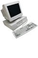

Manage your customer database
Introduction
Small and medium-sized businesses are increasingly using databases to manage their customer relationships, improve sales and customer satisfaction and identify key trends. Customer relationship management (CRM) is a central part of many small business' overall sales and marketing strategies.
This guide will help you understand the concept of CRM and how to use a database for marketing. In particular, you will learn what kind of information your business should collect in a CRM database and how to integrate it with other systems in your business.
The guide also outlines the practical steps in getting a database started, such as what sort of system you need, how to find the right solutions provider and how to develop your customer database.
Subjects covered in this guide
- Introduction
- Using your sales and marketing database to improve customer relationships
- Set up a customer relationship management system
- Compiling your customer data
- Developing your customer database
- Keeping your customer database accurate
- How to choose a supplier for your customer database system

Actions
- Marketing e-course on the learndirect business website
- Implementing successful CRM on the Chartered Institute of Marketing website
- Foundations of relationship marketing course on the Chartered Institue of Marketing website
Developed with:
 The Chartered Institute of Marketing
The Chartered Institute of Marketing
 Help & support | Copyright | Terms & conditions | Privacy & cookies | Accessibility | PDF help
Help & support | Copyright | Terms & conditions | Privacy & cookies | Accessibility | PDF help

|
|
||
|
|
||
|
Manage your customer database |
||
|
|
||
|
Introduction |
||
|
Using your sales and marketing database to improve customer relationships |
||
|
|
||